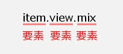

Mebiusbox 2.x ユーザーガイド
スコープとセレクタ
Mebiusbox2 では、テーマ（配色）やフォントの設定の仕方が特殊です。
ここでは、スコープとセレクタという２つの重要な概念について説明します。
これらを理解すれば、テーマやフォントの設定を変更することができます。
そんなに難しくないので、１つずつゆっくり理解していきましょう。
スコープとセレクタは文字列
です。
スコープとセレクタは１つ、または複数の要素名がドット(.)でつながっています。

セレクタはスコープを選択する
セレクタは、スコープを指定するためのものです。
セレクタの最初の要素（左）から順番に全て一致したものが選択されます。
例えば、itemという３つのスコープがあります。
item.view
item.view.mix
これに対してitemというセレクタを指定すると…
item
item.view
item.view.mix
全てのスコープが選択されます。
それでは、item.viewというセレクタを指定すると…
item
item.view
item.view.mix
item.view と item.view.mix の２つを選択します。
そしてitem.view.mixというセレクタを指定すると…
item
item.view
item.view.mix
item.view.mix だけとなります。
ここでviewというセレクタを指定すると…
item
item.view
item.view.mix
どれも一致しません。セレクタの最初の要素と、スコープの最初の要素は一致しなければなりません。
別の例を見てみましょう。
item.view.detailという２つのスコープがあります。
focus.item.view.detail
これに対してfocusというセレクタを指定すると…
item.view.detail
focus.item.view.detail
focus.item.view.detail が選択されます。
一致する要素が多いセレクタが優先される
item.view.detailというスコープがあります。
これに対して、item.viewとitem.view.detailの２つのセレクタがあった場合、
item.view.detailが優先されます。
これでスコープとセレクタの説明は終わりです。